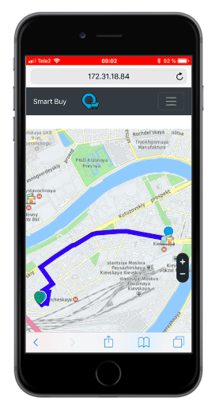
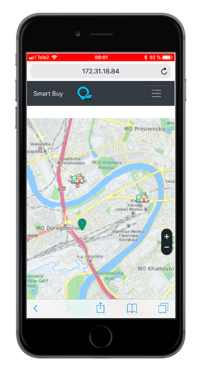
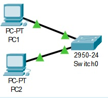
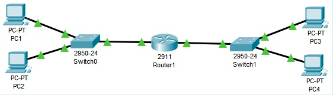
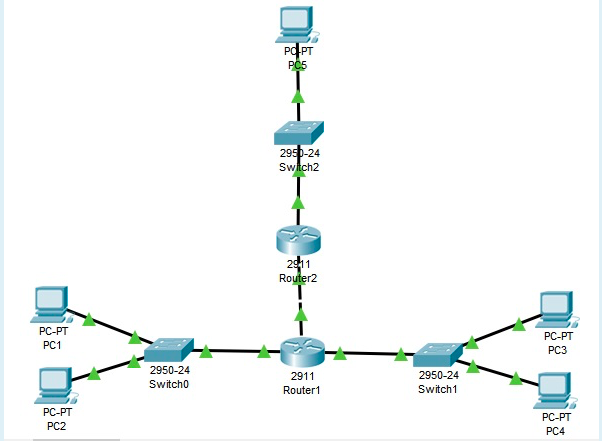

Лабораторная работа №1
Лабораторная работа №2
Лабораторная работа №3
Подготовка к экзамену
Лабораторная работа №2
Задание: Разработка простого веб-приложения
Данный ПП позволяет пользователям легко совершать покупки.


Реп проекта можно посмотреть здесь .
Лабораторная работа №3
Задание: Настройка локальной сети передачи данных
Разместить на рабочем поле коммутатор и два компьютера и соединить их.
Подключить консольный кабель для настройки оборудования.
Настроить адресацию на добавленных компьютерах согласно таблице ниже без шлюза по умолчанию.
Выполнить проверку работоспособности сети.
Добавить на рабочее поле еще один коммутатор с двумя компьютерами и настроить адресацию из другой подсети.
Соединить коммутаторы между собой и проверить работоспособность сети.
В случае неработоспособности сети объяснить причины.
Добавить маршрутизатор на рабочее поле.
Настроить интерфейсы маршрутизатора для существующих подсетей.
Проверить работоспособность сети.
В случае неработоспособности сети объяснить причины.
Указать шлюз по умолчанию и отправить сообщение.
Добавить на рабочее поле еще один маршрутизатор.
Подключить к нему коммутатор и компьютер.
Настроить сетевые настройки согласно таблице ниже.
Соединить между маршрутизаторы и настроить между ними сеть с префиксом /30.
Проверить работоспособность сети, отправив сообщение сети A в сеть С и из сети В в сеть С.
В случае неработоспособности сети объяснить причины.
Настроить статическую маршрутизацию между сетями.
Настроить на сетевых устройствах пароли для привилегированного режима.
Настроить пароли на сетевых устройствах пароли на подключение через консоль и telnet.
Установить баннер на сетевое оборудование.
Проверить работу удаленного подключения.
Был размещён коммутатор и два компьютера.
Выполнено соединение их консольным кабелем.
Настроена адресация.

Проверена работоспособность сети.
Добавлен еще один коммутатор с двумя компьютерами и настроена адресацию из другой подсети.
Соединены коммутаторы между собой и проверена работоспособность сети.
Добавлен маршрутизатор на рабочее поле.

Настроены интерфейсы маршрутизатора для существующих подсетей.
Проверена работоспособность сети.
Настроен шлюз по-умолчанию и отправлено тестовое сообщение.
Добавлен на рабочее поле ещё один маршрутизатор, к нему подключён коммутатор и компьютер.

Настроены сетевые параметры согласно варианту.
Были соединены маршрутизаторы и настроена между ними сеть с маской /30.
Проверена работоспособность сети путём отправки сообщения из сети A в сеть С и из сети В в сеть С
Настроена статическая маршрутизация между сетями.
Настроены пароли для привилегированного режима.
Настроены пароли на подключение через консоль и telnet.
Установлен баннер.
Проверена работа удалённого подключения.
Подготовка к экзамену
Задание: